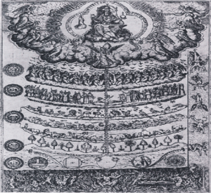

The following is the third part of an article in three installments that initially appeared in July 2016 in Open Theology 2:2016 785-203. It is republished here with the permission of the author. The first installment can be accessed here, the second installment here.
The Rise of Modern Racism in the Enlightenment
The Enlightenment movement of the 18th century was characterized not only by this egalitarian impulse, but more generally by the tendency to look to the works of the classical Greco-Roman tradition (often radically re-read) and nature, in terms of secular science, to support the intellectual and social revolt against the Christian dogmas of the Middle Ages to create a new (or to revive the classical) tradition of Western European learning. Five main ideas or trends characterize the nascent modern racism of this intellectual movement.
The first is the quest to “fill in” the revised Chain of Being discussed at the end of the first section of this essay, combined with the added temporalization of this concept. The second is the “normative gaze” or system of classification within this chain based on physical appearance, particularly the divergence from the newly defined ideal. The third is the system of classification within the chain of being based upon the presence and exercise of the rational faculty. The fourth is the egalitarian impulse discussed above, and the fifth is the biological and hereditary nature of the previous three traits: physical beauty, rational thought, and a love of liberty.
Voltaire, perhaps the man who epitomizes the Enlightenment more than any other, epitomizes these attitudes in his “Essay on the Moors”:
Their round eyes, their flat nose, their lips which are always thick, their differently shaped ears, the wool on their head, the measure even of their intelligence establishes between them and other species of men prodigious differences…
If their understanding is not of a different nature from ours, it is at least greatly inferior. They are not capable of any great application or association of ideas, and seem formed neither in the advantages nor the abuses of our philosophy…
As a result of a hierarchy of nations, Negroes are thus slaves of other men … a people that sells its own children is more condemnable than the buyer; this commerce demonstrates our superiority; he who gives himself a master was born to have one.46
Here the “Moors” or Black Africans in general are judged to be lower on the “hierarchy of nations” due to their physical appearance, different or lack of European modes of thinking, and lack of the love of liberty. In this revised Chain of Being, which proved so influential during the Enlightenment, Enlightened European man sits atop the chain, and all of nature is ranked below him, based on its similarity to or participation in the nature of this new ideal. In the 19th century, Hegel explicitly enunciated this doctrine declaring Western Europe “the land of the elevation of the particular to the universal,”47 and 18th century English dissident philosopher James Beattie wrote, “That every practice and sentiment is barbarous which is not according to the usages of Modern Europe seems to be a fundamental maxim with many of our critics and philosophers.”48
This insight was penned in response to a 1754 essay by David Hume entitled, “Of National Characters” which included the following famous footnote, “I am apt to suspect the negroes and in general all other species of men (for there are four or five different kinds) to be naturally inferior to the whites. There never was a civilized nation of any other complexion than white, nor even any individual eminent either in action or speculation. No ingenious, manufactures amongst them, no arts, no sciences…there are negroe slaves dispersed all over Europe, of whom none ever discovered any symptoms of ingenuity.”49
Here Hume, ever the empiricist, says nothing of the lack of rational faculty in “all other species of men,” but comments extensively upon the lack of evidence of this faculty, “no arts, no sciences,” and here again we have another example of non-white humanity being judged as inferior to white humanity based on their apparent difference in the development of their rational, intellectual faculties. When James Beattie pointed out the tautology (Everything which is not like modern Europe is bad, non-Europeans are not like Europeans, therefore they are bad) and numerous examples of civilizations, arts, and sciences produced by non-white people, Hume retracted the footnote.
But why did Hume feel the need to divide the races of man into different species based on appearance, and attribute all the achievements of civilization to one of them? The French physician Francois Bernier is generally credited with the first use of the term “race” to categorize human beings based on physical appearance, primarily skin color, in his 1684 work, “Nouvelle Division de la Terre par les Différentes Espèces ou Races qui l’Habitant.”50
The categorization of man into races was seen as a part of uncovering the divinely established hierarchy or “natural order” of the entire natural world, from minerals to man. Carolus Linnaeus coined the term “natural order,” and in his 1735 System of Nature advanced the highly influential idea that it was man’s duty to discover this “natural order” and classify everything that exists within it. Here we must return to the previously cited quotation from the 1667 Royal Society, because the continuities are so striking.
And this is the highest pitch of human reason: to follow all the links of this chain till all their secrets are open to our mind and their works advanc’d or imitated by our hands. This is truly to command the world; to rank all the varieties and degrees of things so orderly upon one another; that standing on the top of them, we may perfectly behold all that are below, and make them all serviceable to the quiet and peace and plenty of Man’s life.51
Within this great chain of being, “difference in kind is treated as necessarily equivalent to difference of excellence, to diversity of rank in a hierarchy.”52 Thus the quest to understand and discover the “natural order” implied its classification in a hierarchy. Although Linnaeus himself does not mention the Chain of Being explicitly in his writing, his “natural order” is clearly an 18th century manifestation of this same trope. The same is true for many of the authors of the Enlightenment; even if they do not explicitly cite classical and medieval ideas such as the chain of being or theories from Aristotle’s politics, the implicit presence and strong influence of these concepts is undeniable.
In keeping with the anthropocentric chain of being, Linnaeus described the European race as the epitome of beauty an intelligence being, “gentle, acute, and inventive,” and the Black race as “crafty, indolent, and negligent.… Governed by caprice.”53 Furthermore, in accordance with the “continuity thesis” of the great chain model, Linnaeus posited that black women could probably mate with male apes, revealing both the place of the black race within his hierarchy (at the bottom of humanity, just above the apes), but also the role of gender in his “natural order.”54
The Comte de Buffon, another prominent racial theorist and natural historian of the 18th century revived the classical theories of environmental determinism to explain the variety of races within the single species of man. He maintained that man was originally white, indeed that all infants are born white, but that the influence of the environment changes the color of the skin and the formation of the body. Being an environmentalist, Buffon held that other races could become civilized, but in his A Natural History, General and Particular (French publication 1748-1804), he writes, “All these savages, though they never think, have a pensive, melancholy aspect.”55
Johann Blumenbach adopted or agreed with Buffon’s theory that man was a single species composed of a few varieties, or races, of common origin. However, he was more explicit in his classification, designating the Caucasian race56 as the original race from which the other four races, the Mongolian, the Ethiopian, American, and Malay “degenerated.” This theory was elaborated in his 1776 book On the Natural Varieties of Mankind, which became one of the most authoritative texts on racial classification, and remained so well into the 19th century. Blumenbach justifies his hierarchy by arguing that the Caucasian race displays, “in general, that kind of appearance which, according to our opinion of symmetry, we consider most handsome and becoming,”57 and that its features represent is the mean around which the other races diverge.
This opinion shows the influence of, or at least resonance with the influential theories of J. J. Winckelmann. In 1764, Winckelmann published The History of Ancient Art Among the Greeks, which defined the classical ideal of beauty, particularly physical beauty, for the Enlightenment. Winckelmann established rules of governing the ideal angle of the forehead, size of the eyes, nose, hands, feet, and even eyebrows. In short, Winckelmann developed and defined the physical component of the human ideal that became the basis for classifying human beings along with the rest of nature on the anthropocentric chain of being or “scale of nature.”
The revival of the Greek cult of the body described in the first section of this paper, found its fullest exposition in Winckelmann’s work. Cornel West describes his work as having established a “normative gaze” through or against which other human forms were judged.58 Thus, the humanity of individuals and races was judged on the basis of their conformity to or distance from this physical ideal. The importance of the physical, aesthetic dimension of the ideal form atop the modified chain of being for the development of 18th century theories about race cannot be overstated. The degree to which one differed mentally or physically from this ideal determined one’s place in the natural hierarchy, and thus one’s humanity or lack thereof.
Immanuel Kant infamously demonstrated the logic of this physical/mental hierarchy by refuting the statement of a “Negro carpenter” by declaring, “this fellow was quite black from head to foot, a clear proof that what he said was stupid.”59 While Kant followed the standard Enlightenment racial hierarchy outlined in the previous paragraphs, he contributed two significant ideas to its development: the temporalization of the Great Chain of Being and the permanence of racial heredity. While Kant followed Buffon in maintaining that black infants were born white and “blackened” by their environment, he observed that children of Africans born and raised in North America, and Europeans born and raised in the tropics maintained their racial identity in contrast to what Buffon’s environmental theory of races predicted.
Therefore, Kant posited that while environment could influence race over long periods of time, race was an inherent and inherited feature of people. It is important to remember that for Kant, racial inheritance did not just mean the inheritance of black or white skin, the concept of race included intelligence, beauty, and other moral characteristics such as the propensity for hard work, rational thought, and a love of liberty. Kant concludes one of his lectures on Physical Geography, “Humanity is at its greatest perfection in the race of the whites. The yellow Indians do have a meager talent. The Negroes are far below them and at the lowest point are a part of the American peoples.”60 This component of racial essentialism was crucial for the establishment of modern racism.
Kant’s other significant contribution to the rise of modern racism was his temporalization of the Great Chain of Being. Before Kant, the chain of being was largely regarded as unchanging in time, although Buffon and Blumental’s theories foreshadowed Kant’s concept of the chain of being unfolding and reaching maturity over time. That is, the plenitude of all possible forms of being in the world is not already manifested, but rather manifests throughout time, becoming more and more full and complete as time passes. This temporal and teleological conception of creation was a dramatic shift from previous doctrines, which held that creation was already completed and perfected.61
This notion of evolution or progress, found perhaps its fullest early philosophical expression in the works of Immanuel Kant. Kant, like many other theorists of the Enlightenment, sought to create a narrative in which the rational faculty was responsible for the linear development or progress of mankind from the “primitive” to the “civilized,” a teleological view of civilization that remains prominent in the modern world to this day.
This teleological temporalization of the Great Chain of Being found its fulfillment in Hegel’s theory of the progress of the World Soul.62 Hegel’s evolutionary theory established a temporal continuum with evil, ignorance, darkness, the past, the “primitive” and the non-white races of humanity on one end and good, knowledge, light, the future, “civilization”, progress, and the white race on the other. In his 1822-8 Lectures on the Philosophy of World History, Hegel combined this teleology with environmental determinism and Aristotelian arguments for the right and duty of the conquest, subjugation, and even elimination of the dark side of the continuum by the light.63
These ideas were and are still important in justifying Western imperialism, colonization, and are implicitly invoked today in everything from development work to Marxist coups to white supremacist ideology. On Hegel’s modified, temporalized chain of being, modern, or rather future Western Man is at the top of the chain, while other segments of humanity lie further down the chain and in the past, if not outside of history all together. Thus Hegel implies that non-Europeans are subhuman because they are un-Enlightened, and his importation of racial essentialism seems to imply that they (we) may be irredeemably so.
Conclusion
Thus we can see how the Great Chain of Being, distorted by rationalism and temporalized, formed the philosophical backbone of modern racism. This anthropocentric chain of being generated the quest to classify and rank the human species into sub-groups and produced a physical, mental, and socio-political ideal of humanity against which all other human types were judged and ranked. Thus, a combination of scientific, biological racial essentialism and a hierarchal arrangement of these essential racial categories combined to form modern racism.
Racial essentialism developed from the 17th century division of humanity into races and Kant’s theory of inherited racial identity; and the ranking of races was a direct result of a particular transformation of the hierarchical cosmology of the chain of being. In this way, the philosophical foundations for modern scientific racism were established in Western Europe during the Late Medieval to the Early Modern period. Modern racism’s origins were based on a revised chain of being, with “Enlightened,” European man on top, coupled with the rise of biological racial essentialism and determinism.
In summary, the decline of religion and the secularization of knowledge in the West during the Renaissance and Enlightenment led to a radical reconfiguration of the cosmos, represented by the chain of being. In this reconfigured model, Western, Enlightened man, instead of God, sat atop the chain, and became the measure and master of all things. As 18th century scientists sought to discover and classify all elements of reality within this great chain, they ranked varieties of humanity based on their proximity to this ideal.
Furthermore, the rise of racial essentialism made these rankings static. In this way, medieval Europeans and contemporary members of non-white races were intellectually classified as sub-human, justifying the discriminatory and prejudiced attitudes and practices of the general European populace. This is but one angle from which to view the emergence of modern racism, but it is an important one, as it lays bare the basic philosophical structure underlying many of the diverse and divergent theories, beliefs, and actions underlying the modern forms of racism that continue to plague our societies around the world.
While much anti-racist literature has focused on debunking the racial essentialism of modern racism, demonstrating that race is a social construct, this analysis suggests that contemporary scholars of religion, theologians, and anti-racist/de-colonial scholars and activists should also focus their efforts on re-evaluating the legacy of the far more pervasive and implicit notions of “progress,” “reason,” and “civilization/development” that also form an integral part of modern racism, especially its more subtle varieties.64 Without attending to these dimensions of modern racism, we risk committing the same
error of making certain ideals of certain segments of Western Civilization (and its conquered territories) the measure of all things, again naïvely subjecting the philosophies, theologies, cultures, practices, and peoples of other civilizations and segments of humanity to the same provincial and prejudiced standards.
In the epigram to this article, DuBois wrote that “the darker races in other parts of the world have, in the last four centuries lagged behind the flying and even feverish footsteps of Europe.” We must critically interrogate such notions of “lagging behind,” “progress,” and “development,” and understand the history, underlying assumptions, and often unsavory concomitants of these ideas. If one were to replace “Modern Europe” with “liberal, secular, ‘developed,’ democracy,” James Beattie’s lament, “that every practice and sentiment is barbarous which is not according to the usages of Modern Europe seems to be a fundamental maxim with many of our critics and philosophers,” still rings true today.
Oludamini Ogunnaike is a post-doctoral fellow at Stanford University and a scholar of African, Islamic, and religious studies, with a focus on the intellectual and artistic dimensions of West African Sufism and Ifa, an indigenous Yoruba religious tradition. His work examines the postcolonial, colonial, and precolonial Islamic and indigenous religious traditions of West Africa, seeking to understand the philosophical dimensions of these traditions by approaching them and their proponents not merely as sources of ethnographic or historical data, but rather as distinct intellectual traditions and thinkers, and even as sources of theory and possible inspirations for methods of scholarship in the humanities and social sciences. Oludamini is also working on an online database of West African Sufi Poetry and, along with Ayodeji Ogunnaike, is working on a similar database for the Odu Ifa (the sacred orature of Ifa). He is a graduate of Harvard College and earned his PhD from Harvard University’s Department of African and African American Studies.
46. Voltaire, Essai sur les maures qtd. in Cohen, The French Encounter with Africans, 85, 133.
47. Hegel, Lectures on the Philosophy of World History in Eze, Race and the Enlightenment, 122.
48. Beattie, “An Essay on the Nature an Immutability of Truth, in Opposition to Sophistry and Skepticism” in Eze, Race and the Enlightenment, 36.
49. In Eze, Race and the Enlightenment, 33.
50. “A New Division of the Earth by the Different Species or Races Which Inhabit It.”
51. Lovejoy, The Great Chain of Being, 232.
52. Ibid., 64.
53. Eze, Race and the Enlightenment, 13.
54. The role of the modification of the great chain of being on gender is ripe ground for future research see Laqueur’s Making Sex: Body and Gender from the Greeks to Freud for an introduction to the influence of the Enlightenment on conceptions of gender.
55. Eze, Race and the Enlightenment, 19.
56. Blumenbach coined the term “Caucasian race.”
57. Eze, Race and the Enlightenment, 84.
58. West, Prophecy Deliverance, Chapter 2: “A Genealogy of Modern Racism.”
59. Eze, Race and the Enlightenment, 57.
60. Ibid., 63.
61. Lovejoy, The Great Chain of Being, 56.
62. Itself a strange conglomerate of the Platonic or neo-Platonic Psyche and the universal rational faculty of the Enlightenment, but thrust into the river of time.
63. Eze, Race and the Enlightenment, 112-153.
64. See the works of Walter Mignolo, such as Mignolo, “Epistemic Disobedience, Independent Thought, and De-Colonial Freedom,” for an example of such efforts.